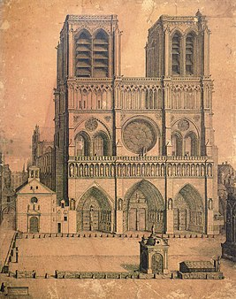
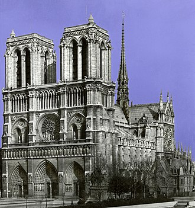

La cathédrale Notre-Dame de Paris, communément appelée Notre-Dame, est l'un des monuments les plus emblématiques de Paris et de la France. Elle est située sur l'île de la Cité et est un lieu de culte catholique, siège de l'archidiocèse de Paris, dédié à la Vierge Marie.Commencée sous l'impulsion de l'évêque Maurice de Sully, sa construction s'étend sur environ deux siècles, de 1163 au milieu du xive siècle. Après la Révolution française, la cathédrale bénéficie entre 1845 et 1867 d'une importante restauration, parfois controversée, sous la direction de l'architecte Eugène Viollet-le-Duc, qui y incorpore des éléments et des motifs inédits. Pour ces raisons, le style n'est pas d'une uniformité totale : la cathédrale possède des caractères du gothique primitif et du gothique rayonnant. Les deux rosaces qui ornent chacun des bras du transept sont parmi les plus grandes d'Europe.La cathédrale est liée à de nombreux épisodes de l'histoire de France. Église paroissiale royale au Moyen Âge, elle accueille l'arrivée de la Sainte Couronne en 1239, puis le sacre de Napoléon Ier en 1804, le baptême d'Henri d'Artois, le duc de Bordeaux, en 1821, ainsi que les funérailles de plusieurs présidents de la République française (Adolphe Thiers, Sadi Carnot, Paul Doumer, Charles de Gaulle, Georges Pompidou, François Mitterrand). C'est aussi sous ses voûtes qu'est chanté un Magnificat lors de la libération de Paris, en 1944. Le 850e anniversaire de sa construction est célébré en 2013.
Histoire
Une tradition fait exister à l'emplacement de Notre-Dame un temple païen gallo-romain dédié à Jupiter. Il s'agit d'un mythe historiographique reposant sur la découverte du pilier des Nautes en 1711, retrouvé sous la cathédrale, démonté et remployé dans les maçonneries du rempart gallo-romain entourant la Cité au Bas-Empire. Ce pilier, dédié effectivement à Jupiter entre -14 et -37, aurait pu se dresser n'importe où à Lutèce et être acheminé, comme nombre de blocs sculptés issus de monuments antiques, au ive siècle, lors des travaux liés à la fortification de l'île, qui n'était alors que faiblement urbanisée.Quatre édifices religieux se succèdent avant la cathédrale de Maurice de Sully : une église paléochrétienne du ive siècle remaniée en une basilique mérovingienne, puis une cathédrale carolingienne et enfin une cathédrale romane restaurée et agrandie, mais qui s'avère progressivement trop petite pour la population de Paris qui augmente rapidement. La construction de la cathédrale de Paris ne dure qu'environ 75 ans, jusqu'au début des travaux de réalisation des chapelles latérales entre les contreforts, à partir de 1235. Cette rapidité de construction nécessite un financement important. Le livre d'Henry Kraus sur L'Argent des cathédrales montre que cette première phase de construction ne mobilise, pour l'essentiel, que des biens propres de l'évêque et du chapitre. La construction de la cathédrale profite peut-être d'une période de prospérité et de paix. Pendant le règne de Philippe Auguste, le domaine royal s'agrandit considérablement par l'acquisition de la Normandie et du Languedoc, ce qui entraîne une augmentation des finances de la monarchie, mais aussi de la bourgeoisie parisienne, qui participe à la gestion de ce nouveau domaine royal. Cependant, les noms des rois n'apparaissent pas dans le financement de la cathédrale. Par exemple, Saint Louis, qui fait pourtant de nombreux dons aux abbayes et monastères, n'est pas cité.
En 1625 est construite la fontaine du Parvis Notre-Dame par l'architecte Augustin Guillain, elle est destinée à alimenter les habitants de l'Île de la Cité en eau courante25. En 1699, selon le souhait de Louis XIV et le vœu de son père Louis XIII26, on opéra de profondes transformations dans la décoration intérieure de la cathédrale, notamment au niveau du chœur. L'architecte Robert de Cotte démolit le jubé (qui fut remplacé par une grille en fer forgé doré à la feuillure d'or), une partie des hauts-reliefs des clôtures afin d'ouvrir le chœur sur le déambulatoire en les remplaçant par des grilles, ainsi que des tombeaux pour permettre le réaménagement complet du chœur dans le goût de l'époque, à l'instar de bon nombre d'autres cathédrales gothiques dans toute l'Europe, au cours des xviie et xviiie siècles. De nouvelles stalles furent réalisées, ainsi qu'un nouveau maître-autel pour lequel furent confectionnées les statues qui l'ornent encore aujourd'hui, représentant Louis XIV renouvelant le vœu de son père Louis XIII, tous deux agenouillés devant la Pietà. En 1709, le chanoine Antoine de La Porte commanda au roi Louis XIV six tableaux illustrant la vie de la Vierge pour la décoration du chœur. Charles de La Fosse, réalisa pour ce projet en 1715, L'Adoration des mages, aujourd'hui conservé au Musée du Louvre.
Incendie du 15 avril 2019
Dans la soirée du 15 avril 2019, dans les environs de 18 heures58, un grave incendie se déclare. Le sinistre détruit la toiture de la cathédrale et sa charpente du xiiie siècle, la flèche de Viollet-le-Duc, et plusieurs voûtes formant le plafond (celle de la croisée du transept, celle du transept nord, et une travée de la nef)60,61. L'incendie déclenche une émotion considérable en France mais aussi dans le monde entier. Sur les rives de la Seine, Parisiens et touristes se rassemblent. De nombreux catholiques se mettent en prière.L'incendie est maîtrisé le lendemain matin grâce à l'intervention d'environ 650 pompiers. Une cinquantaine d'enquêteurs commencent peu après la fin de l'incendie leurs investigations afin d'émettre des hypothèses sur les causes éventuelles de l'incendie de la cathédrale. Le jour même du déclenchement de l'incendie, le président de la République, Emmanuel Macron, annonce que la cathédrale sera reconstruite63,64 et le lendemain, lors d'une allocution télévisée spéciale, il déclare : « Nous rebâtirons la cathédrale plus belle encore, et je veux que cela soit achevé d'ici cinq années. » Le jour suivant, le Premier ministre, Édouard Philippe, annonce qu'un concours international d'architecture sera lancé pour reconstruire la flèche de la cathédrale66. Dès la nuit de l'incendie, les dons de particuliers, d'entreprises et d'institutions publiques affluent de France et de l'étranger, permettant d'envisager la reconstruction des parties sinistrées.